Home
Criar indicador
Imports
Plots
inputs
Lista de inputs
»»»»»»»»»»»»»»»»» IMPORTS INPUT «««««««««««««««««
import os
import sys
import traceback
import mttkinter as mtk
import customtkinter as ctk
from tkinter import messagebox
from CreateIndicator.Plots.mWriteReadInput import *
from CreateIndicator.Extra.collection import *
from CreateIndicator.Extra.mWidgets import *
from CreateIndicator.Extra.mConsole import console
from DataFrames.mFormatNumber import *
from DataFrames.mDataSeries import *
from SystemFiles.mWriteLog import *
from paths import PATH_Icon
»»»»»»»»»»»»»»»»»»»»»»» «««««««««««««««««««««««««
Explanation about inputs
* Particularities in the positioning of widgets.
Separated into two categories, Individual and Double .
- Individual occupies the correct column passed as a parameter.
- Double has in its structure 2 widgets, one Label with another widget.
In the case of Double , it will internally adjust to position the Label in the column provided as a parameter and adjust 'column+1' for the other widget.
In the case of the vertical separator, the internal adjustment considers 2 occupied column positions.
- If you pass column 0 as a parameter, it will be internally positioned in column 2 .
Positioning: Parameter column - Applied column.
0 2
1 5
2 8
* Note: When using the Individual widget and Vertical Separator , be careful with the widget positioning to avoid overlapping with the separator . .
* Example:
self.frame = createFrame(self.root, row = 0, column = 0, padx = 5, pady = 5, background = '#8a8a8a')
inputLabel(self.frame, row = 0, column = 0, text = 'Example', textColor = 'white', background ='#575757')
inputEntry(self.frame, row = 1, column = 0, text = 'Entry 1', width = 140, defaultValue = '', textType = 'text')
inputButton(self.frame, row = 2, column = 0, text = 'Button1', position = 'left', background = '#047e00')
createVSeparator(self.frame, row = 0, column = 0, rowspan = 3)
inputEntry(self.frame, row = 1, column = 1, text = 'Entry 2', width = 140, defaultValue = '', textType = 'text')
inputButton(self.frame, row = 2, column = 4, text = 'Button2', position = 'right', background = '#7e6b00')
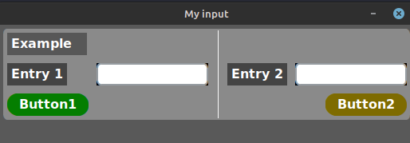
Save input values
In the automatically generated input model, there is this code:
lstInputs = readingInput( pathConfig, symbol )
defaultValues = [symbol, 'entry', '5', '1.5', 'None', '0.5', '#ffffff', '2024-01-01 00:00' ] # Examble default values, only string!
_, value1, value2, value3, value4, value5, value6, value7 = valuesInList(lstInputs, defaultValues)
You need to ensure values in the configuration file, so determine the correct number of inputs in this code.
In the list, the first value symbol is mandatory, and all must be String .
When using the values received from the configuration file, make sure to convert them correctly to the corresponding type. int(value2) , float(value3) , and so on.
Method responsible for saving the configurations.
button = inputButton(self.frame, 0, 0, 'Apply', position = 'full')
button.configure(command = lambda: self.writeInputs(pathConfig, symbol))
* To access values from any input, use .value()
def writeInputs(self, path, symbol):
lstInputs = [self.entry.value(),
self.intSpinBox.value(),
self.floatSpinBox.value(),
self.optionMenu.value(),
self.slider.value(),
self.color.value(),
self.dateTime.value()]
# Common indicator
writeInput(pathFile = path, symbol = symbol, lstInputs = lstInputs)
# For use in a histogram
writeInput(TruisHistograme
pathFile = path,
symbol = symbol,
lstInputs = lstInputs,
isHistogram = True,
heightHistogram = self.spinHeight.value()
)
Parameters:
isHistogram Indicates that it will be a histogram, and in the indicator file, it should have SEPARATE_WINDOW = True .
There's no need to record the height of the histogram in the indicator's configuration file, marking it as True will direct it to the file shared by the project.
heightHistogram the height of the histogram session, using a spinbox as an example.
The height of the histogram is optional as it has a default value set to 3.
WIDGETS
FRAME
def createFrame(
window: ctk.CTk,
row: int = 0,
column: int = 0,
padx: int = 2,
pady: int = 2,
width: int = 200,
height: int = 200,
background: str = '#444444',
position: str = 'we',
colspan: int = 1
):
- Creation of layouts allowing for the division of inputs with multiple frames.
* Example:
self.frame1 = createFrame(self.root, row = 0, column = 0, padx = 5, pady = 5, background = '#9b6565')
self.frame2 = createFrame(self.root, row = 0, column = 1, padx = 5, pady = 5, background = '#e4d949')
self.frame3 = createFrame(self.root, row = 1, column = 0, padx = 5, pady = 5, background = '#659b7a')
self.frame4 = createFrame(self.root, row = 1, column = 1, padx = 5, pady = 5, background = '#8c659b')
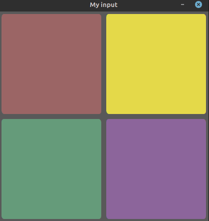
Input label
def inputLabel(
frame: ctk.CTkFrame,
row: int = 0,
column: int = 0,
text: str = 'Label',
width: int = 100,
textColor: str = 'black',
background: str = 'white',
textAlignm: str = 'left',
position: str = 'left' # 'left', 'right', 'center' or 'full'
):
- Individual widget, occupies one column, its positioning is free.
Input button
def inputButton(
frame: ctk.CTkFrame,
row: int = 0,
column: int = 0,
text: str = 'button',
textColor: str = 'white',
background: str = '#a70000',
position: str = 'left' # 'left', 'right', 'center' or 'full'
):
- Individual widget, occupies one column, its positioning is free.
* Example:
self.frame = createFrame(self.root, row = 0, column = 0, padx = 5, pady = 5, background = '#8a8a8a')
inputLabel(self.frame, row = 0, column = 0, text = 'Example button input', textColor = 'white', background ='#575757')
inputButton(self.frame, row = 1, column = 0, text = 'Button1', position = 'left', background = '#7e6b00')
inputButton(self.frame, row = 2, column = 0, text = 'Button2', position = 'right', background = '#cc7606')
inputButton(self.frame, row = 3, column = 0, text = 'Button3', position = 'center', background = '#007e63')
inputButton(self.frame, row = 4, column = 0, text = 'Button4', position = 'full', background = '#7a007e')
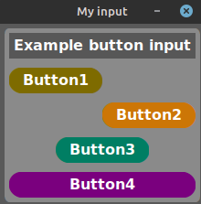
Input Checkbox
def inputCheckbox(
frame: ctk.CTkFrame,
row: int = 0,
column: int = 0,
text: str = 'checkbox',
defaultValue: str = 'False', # 'String, first letter uppercase True or False.'
textColor: str = 'white',
background: str = 'transparent',
position: str = 'left' # 'left', 'right' or 'center'
):
- Individual widget, occupies one column, its positioning is free.
* Example:
self.frame = createFrame(self.root, row = 0, column = 0, padx = 5, pady = 5, background = '#8a8a8a')
inputLabel(self.frame, row = 0, column = 0, text = 'Example checkbox input', textColor = 'white', background ='#575757')
inputCheckbox(self.frame, row = 1, column = 0, text = 'check1', textColor = '#ffe600', position = 'left')
inputCheckbox(self.frame, row = 2, column = 0, text = 'check2', textColor = '#7aff0d', position = 'right')
inputCheckbox(self.frame, row = 3, column = 0, text = 'check3', textColor = '#07ffde', position = 'center')
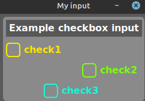
Input calendar "Date"
def inputCalendar(
frame: ctk.CTkFrame,
row: int = 0,
column: int = 0,
date: str = '2024-01-01',
fontSize: int = 15
):
- Individual widget, occupies one column, its positioning is free.
* Example:
self.frame = createFrame(self.root, row = 0, column = 0, padx = 5, pady = 5, background = '#8a8a8a')
inputLabel(self.frame, row = 0, column = 0, text = 'Example calendar input', textColor = 'white', background ='#575757')
inputCalendar(self.frame, row = 1, column = 0, date = '2024-01-01', fontSize = 16)
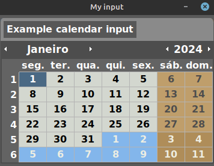
Input entry
def inputEntry(
frame: ctk.CTkFrame,
row: int = 0,
column: int = 0,
text: str = 'Label',
width: int = 100,
textColor: str = 'black',
background: str = 'white',
defaultValue: str = '',
textType: str = 'text', # "int", "float" or "text"
position: str = 'left', # 'left', 'right', 'center' or 'full'
placeHolder: str = 'Entry'
):
- Double widget, occupies two columns, widget composed of a Label + Entry .
* textType:
int - Only integer, positive or negative.
float - Only numbers separated by a dot , positive or negative.
text - Any character.
* Example:
self.frame = createFrame(self.root, row = 0, column = 0, padx = 5, pady = 5, background = '#8a8a8a')
inputLabel(self.frame, row = 0, column = 0, text = 'Example entry input', textColor = 'white', background ='#575757')
inputEntry(self.frame, row = 2, column = 0, text = 'Entry2', width = 50, defaultValue = '2', textType = 'int', position = 'right')
inputEntry(self.frame, row = 3, column = 0, text = 'Entry3', width = 50, defaultValue = '3.0', textType = 'float', position = 'center')
inputEntry(self.frame, row = 4, column = 0, text = 'Entry4', width = 90, defaultValue = 'Entry 4', textType = 'text', position = 'left')
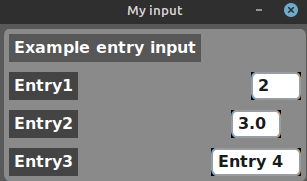
Input spinbox "int"
def inputIntSpinbox(
frame: ctk.CTkFrame,
row: int = 0,
column: int = 0,
text: str = 'Label',
minimum: int = 0,
maximum: int = 10,
width: int = 5,
textColor: str = 'black',
background: str = 'white',
defaultValue: int = 0,
position: str = 'left' # 'left', 'right' or 'center'
):
- Double widget, occupies two columns, widget formed by Label + Spinbox .
* Example:
self.frame = createFrame(self.root, row = 0, column = 0, padx = 5, pady = 5, background = '#8a8a8a')
inputLabel(self.frame, row = 0, column = 0, text = 'Example intSpinbox input', textColor = 'white', background ='#575757')
inputIntSpinbox(self.frame, row = 1, column = 0, text = 'Spin int 1', minimum = -10, maximum = 2000, width = 3, defaultValue = 10, position = 'right')
inputIntSpinbox(self.frame, row = 2, column = 0, text = 'Spin int 2', minimum = -10, maximum = 2000, width = 5, defaultValue = 1000, position = 'center')
inputIntSpinbox(self.frame, row = 3, column = 0, text = 'Spin int 3', minimum = -10, maximum = 200000, width = 7, defaultValue = 100000, position = 'left')
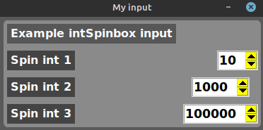
Input spinbox "float"
def inputFloatSpinbox(
frame: ctk.CTkFrame,
row: int = 0,
column: int = 0,
text: str = 'Label',
minimum: int = 0,
maximum: int = 10,
width: int = 5,
textColor: str = 'black',
background: str = 'white',
defaultValue: float = 0.0,
position: str = 'left' # 'left', 'right' or 'center'
):
- Double widget, occupies two columns, widget formed by Label + Spinbox .
* Example:
self.frame = createFrame(self.root, row = 0, column = 0, padx = 5, pady = 5, background = '#8a8a8a')
inputLabel(self.frame, row = 0, column = 0, text = 'Example floatSpinbox input', textColor = 'white', background ='#575757')
inputFloatSpinbox(self.frame, row = 1, column = 0, text = 'Spin float 1', minimum = -10, maximum = 2000, width = 5, defaultValue = 10.0, position = 'right')
inputFloatSpinbox(self.frame, row = 2, column = 0, text = 'Spin float 2', minimum = -10, maximum = 2000, width = 7, defaultValue = 1000.0, position = 'center')
inputFloatSpinbox(self.frame, row = 3, column = 0, text = 'Spin float 3', minimum = -10, maximum = 200000, width = 9, defaultValue = 100000.0, position = 'left')
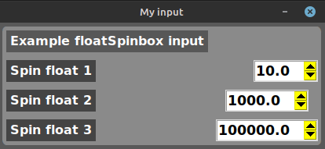
Input option menu
def inputOptions(
frame: ctk.CTkFrame,
row: int = 0,
column: int = 0,
text: int = 'Label',
values: list = [],
defaultValue: str = '',
width: int = 70 ,
position: str = 'left' # 'left', 'right' or 'center'
):
- Double widget, occupies two columns, widget formed by Label + OptionMenu .
* Exemplo:
self.frame = createFrame(self.root, row = 0, column = 0, padx = 5, pady = 5, background = '#8a8a8a')
inputLabel(self.frame, row = 0, column = 1, text = 'Example option menu input', textColor = 'white', background ='#575757')
inputOptions(self.frame, row = 1, column = 0, text = 'Options', values = ['value1', 'value2', 'value3'], defaultValue = 'value1', position = 'left')
inputOptions(self.frame, row = 2, column = 0, text = 'Options', values = ['value1', 'value2', 'value3'], defaultValue = 'value2', position = 'center')
inputOptions(self.frame, row = 3, column = 0, text = 'Options', values = ['value1', 'value2', 'value3'], defaultValue = 'value3', position = 'right')
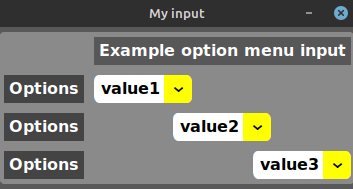
Input slider
def inputSlider(
frame: ctk.CTkFrame,
row: int = 0,
column: int = 0,
startValue: int = 0,
endValue: int = 1,
defaultValue: float = 0.0,
buttonColor: str = '#2d92cc',
background: str = '#444444',
position: str = 'left', # 'left', 'right', 'center' or 'full'
text str = '' # 'Title'
):
- Double widget, occupies two columns, widget formed by Label + Slider .
* Example:
self.frame = createFrame(self.root, row = 0, column = 0, padx = 5, pady = 5, background = '#8a8a8a')
inputLabel(self.frame, row = 0, column = 1, text = 'Example slider input', textColor = 'white', background ='#575757')
inputSlider(self.frame, row = 1, column = 0, startValue = 0, endValue = 1, defaultValue = '0.30', position = 'left')
inputSlider(self.frame, row = 2, column = 0, startValue = 1, endValue = 10, defaultValue = '5.50', position = 'center')
inputSlider(self.frame, row = 3, column = 0, startValue = 10, endValue = 100, defaultValue = '50.10', position = 'right')
inputSlider(self.frame, row = 4, column = 0, startValue = 0, endValue = 1, defaultValue = '0.1', position = 'full')
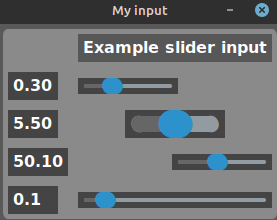
Input color
def inputColor(
frame: ctk.CTkFrame,
row: int = 0,
column: int = 0,
text: str = 'Label',
color: str = '#a70000',
defaultColor: str = '#a70000',
position: str = 'left' # 'left' or 'right'
):
- Double widget, occupies two columns, widget formed by Label + Button color .
* Example:
self.frame = createFrame(self.root, row = 0, column = 0, padx = 5, pady = 5, background = '#8a8a8a')
inputLabel(self.frame, row = 0, column = 1, text = 'Example color input', textColor = 'white', background ='#575757')
inputColor(self.frame, row = 1, column = 0, text = 'color1', color = 'aqua', defaultColor = 'white', position = 'left')
inputColor(self.frame, row = 2, column = 0, text = 'color2', color = 'green', defaultColor = 'white', position = 'right')
inputColor(self.frame, row = 3, column = 0, text = 'color3', color = 'yellow', defaultColor = 'white', position = 'left')
inputColor(self.frame, row = 4, column = 0, text = 'color4', color = 'red', defaultColor = 'white', position = 'right')
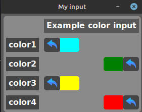
Input calendar "Date and time"
def inputDatetime(
frame: ctk.CTkFrame,
row: int = 0,
column: int = 0,
text: str = 'date',
dateTime: str = '2024-01-01 00:00'
) -> str:
- Double widget, occupies two columns, widget formed by Label + Datetime .
* Example:
self.frame = createFrame(self.root, row = 0, column = 0, padx = 5, pady = 5, background = '#8a8a8a')
inputLabel(self.frame, row = 0, column = 1, text = 'Example DateTime input', textColor = 'white', background ='#575757')
inputDatetime(self.frame, row = 1, column = 0, text = 'Date time', dateTime = '2024-01-01 10:00')
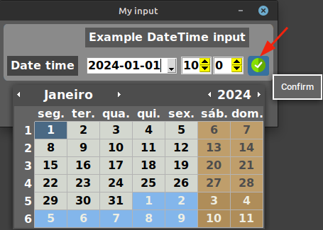
"Horizontal and Vertical Separators"
def createHSeparator(
frame: ctk.CTkFrame,
row: int = 0,
column: int = 0,
colspan: int = 2
):
- "Creates a separator in the Horizontal direction, using the colspan parameter to adjust the desired size."
def createVSeparator(
frame: ctk.CTkFrame,
row: int = 0,
column: int = 0,
rowspan: int = 5
):
- "Creates a separator in the Vertical direction, using the rowspan parameter to adjust the desired size."
* Example:
self.frame = createFrame(self.root, row = 0, column = 0, padx = 5, pady = 5, background = '#8a8a8a')
inputLabel(self.frame, row = 0, column = 0, text = 'Separator 1', textColor = 'white', background ='#575757')
createHSeparator(self.frame, row = 1, column = 0, colspan = 8)
inputLabel(self.frame, row = 2, column = 0, text = 'Separator 1', textColor = 'white', background ='#575757')
createHSeparator(self.frame, row = 3, column = 0, colspan = 8)
inputLabel(self.frame, row = 4, column = 0, text = 'Separator 1', textColor = 'white', background ='#575757')
createVSeparator(self.frame, row = 0, column = 0, rowspan = 5)
inputLabel(self.frame, row = 0, column = 4, text = 'Separator 2', textColor = 'white', background ='#575757')
inputLabel(self.frame, row = 2, column = 4, text = 'Separator 2', textColor = 'white', background ='#575757')
inputLabel(self.frame, row = 4, column = 4, text = 'Separator 2', textColor = 'white', background ='#575757')
createVSeparator(self.frame, row = 0, column = 1, rowspan = 5)
inputLabel(self.frame, row = 0, column = 7, text = 'Separator 3', textColor = 'white', background ='#575757')
inputLabel(self.frame, row = 2, column = 7, text = 'Separator 3', textColor = 'white', background ='#575757')
inputLabel(self.frame, row = 4, column = 7, text = 'Separator 3', textColor = 'white', background ='#575757')
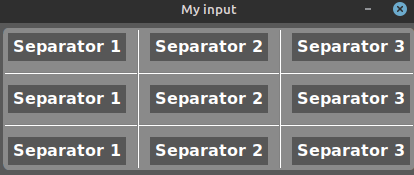